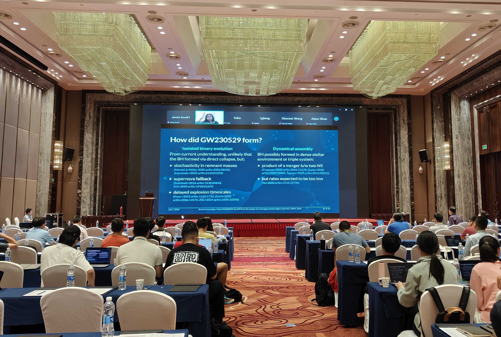
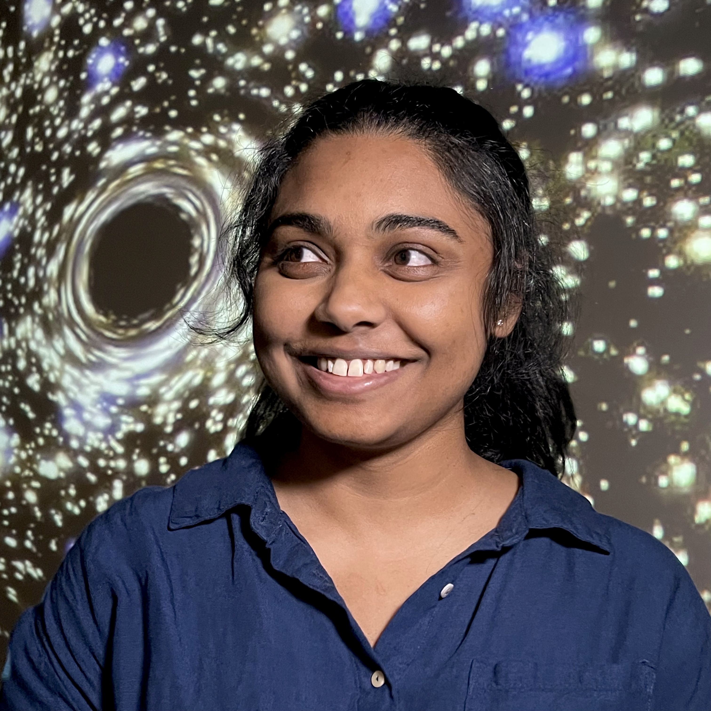
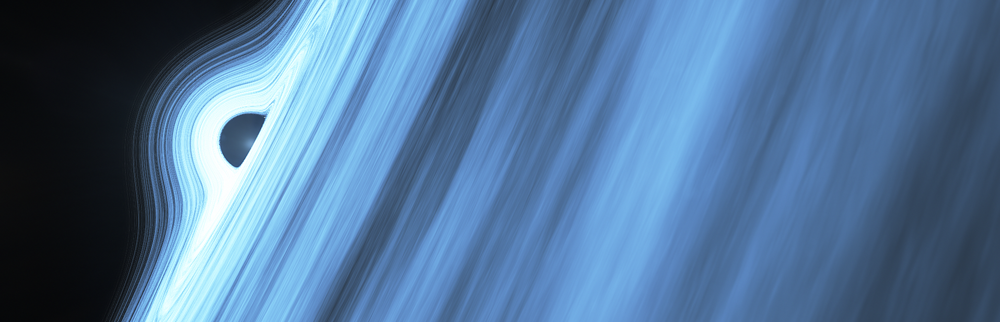
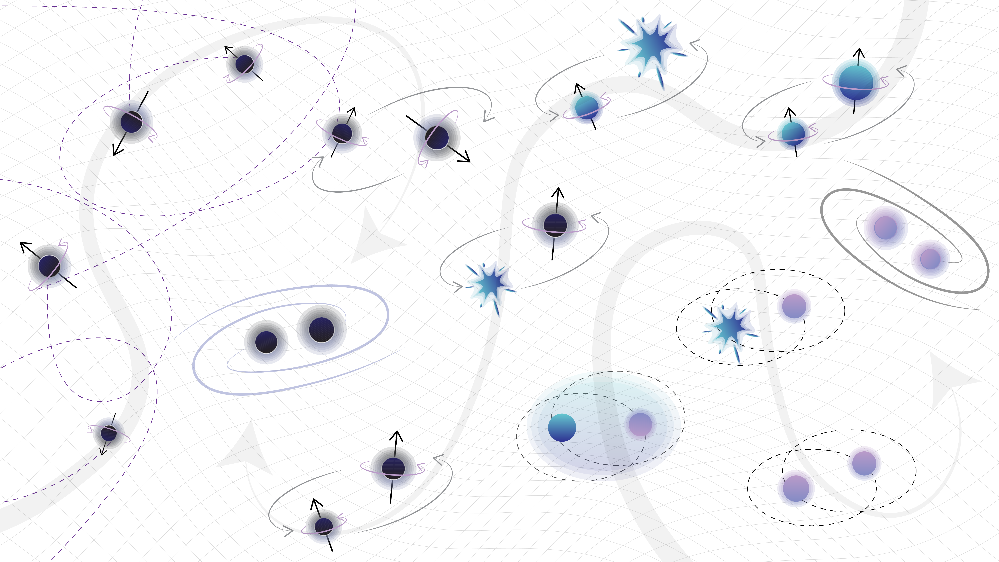
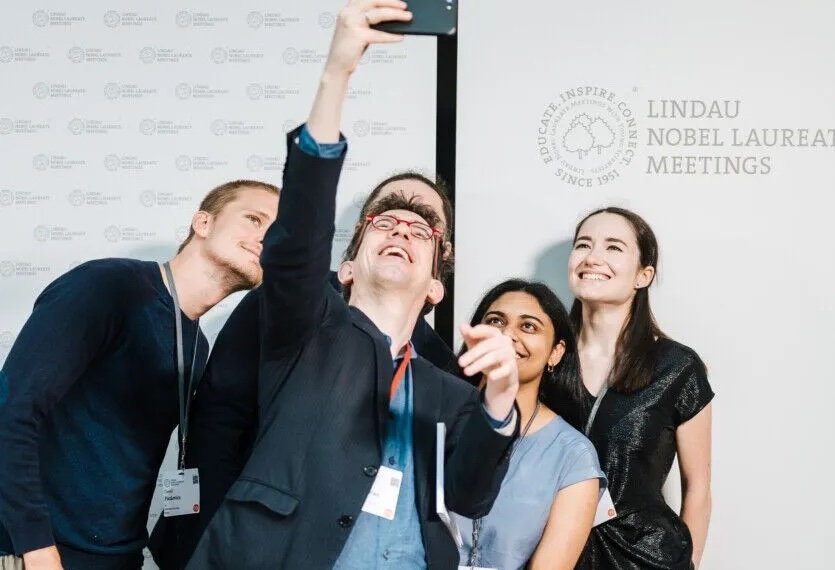
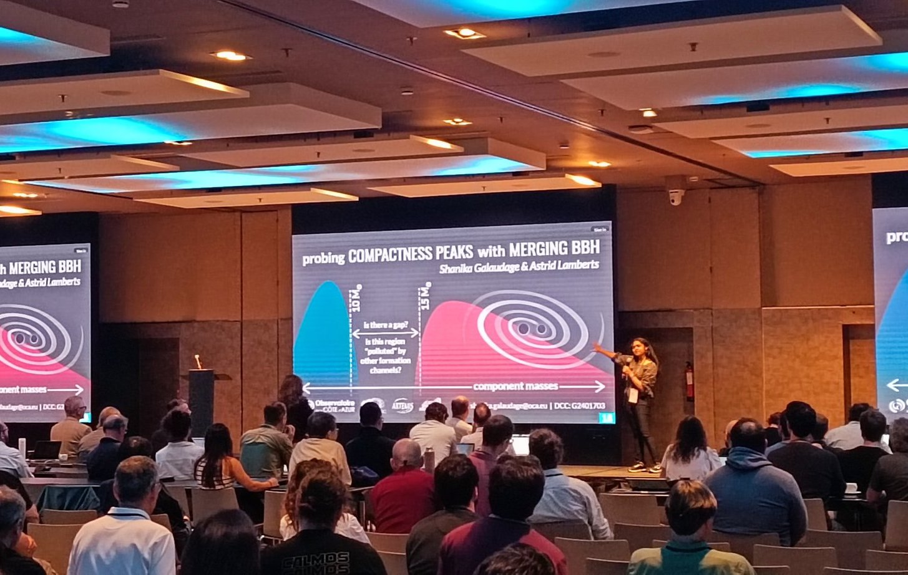
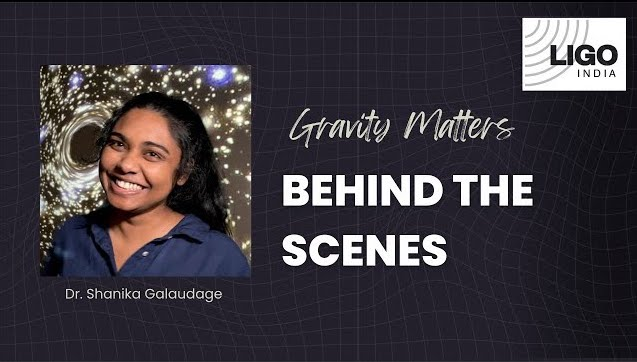
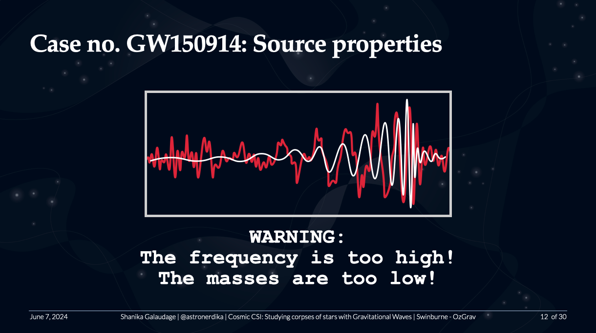
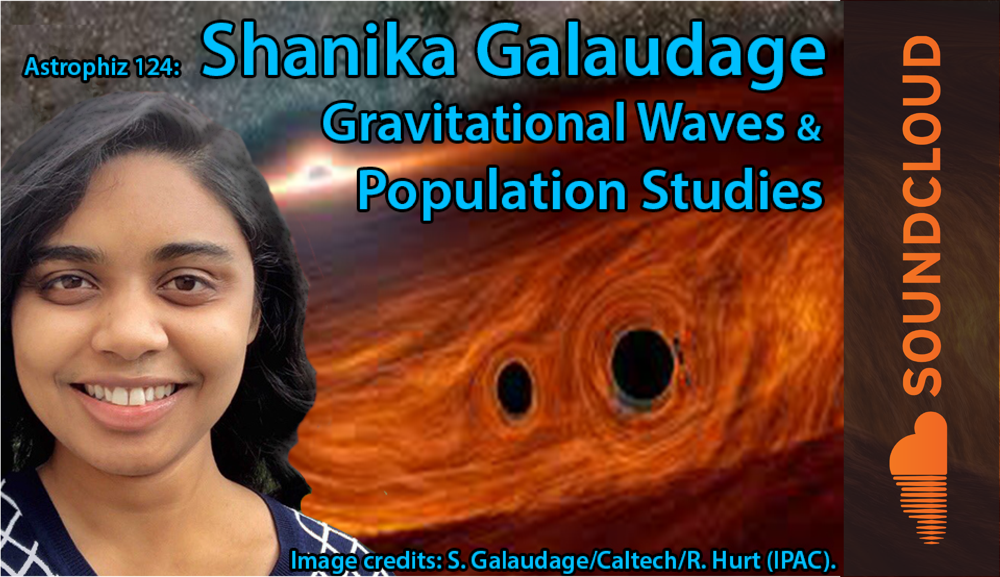

GWAC | Beijing Normal University
Invited to give a talk on the discovery of GW230529 at the Gravitational Wave Astrophysics Conference in China

Astrophysicist
Science Communicator
Chicago, USA

Hi, I'm Shanika! I'm a postdoctoral fellow, jointly at Northwestern University's Centre for Interdisciplinary Exploration and Research in Astrophysics (CIERA) and the Adler Planetarium. I study pairs of the most extreme objects in the universe (e.g. black holes and neutron stars) using gravitational waves to understand how these systems form, live and die. I am a member of the LIGO-Virgo-KAGRA Collaboration and an affliate of OzGrav - ARC Centre of Excellence for Gravitational Wave Discovery. I am also active in science communication and outreach, sharing astronomy through public talks, writing, and visual storytelling, with a focus on clarity, accessibility, and inclusive engagement.
Gravitational-wave astronomy is transforming what we know about the most extreme objects in the Universe. Since the first direct detection in 2015, we have more than 200 compact-binary mergers, with the fourth observing run concluding on November 18, 2025. With this rapidly growing dataset, we can move beyond individual events to measure the underlying population properties of black holes and neutron stars, including how these binaries form, evolve, and merge.

My research involves using gravitational waves to study populations of compact binaries to probe the stellar evolution processes and formation mechanisms of these systems.
Detailed CV can be found here, updated Oct 2024.
2019-23
PhD | Monash University
Thesis: Population properties of black holes and neutron stars: the emerging picture from gravitational-wave astronomy
Supervisors: Eric Thrane and Ilya Mandel
2015-18
Bachelor of Science Advanced - Research (Honours) | Monash University
Thesis: Searching for X-ray pulsations from gravitational-wave candidates - 1st class honours
Supervisors: Duncan Galloway and Karl Wette
Below is a list of some key publications. I am an author on numerous publications as part of the LIGO-Virgo-KAGRA (LVK) Collaboration.
LVK Collaboration (incl. Galaudage, S.,) GW241011 and GW241110: Exploring Binary Formation and Fundamental Physics with Asymmetric, High-spin Black Hole Coalescences (2025) ApJL 993 L21
Galaudage, S., and Lamberts, A. Compactness peaks: An astrophysical interpretation of the mass distribution of merging binary black holes (2025) A&A 694 186
LVK Collaboration (incl. Galaudage, S.,) Observation of Gravitational Waves from the Coalescence of a 2.5–4.5 M☉ Compact Object and a Neutron Star (2024) ApJL 970, L34
LVK Collaboration (incl. Galaudage, S.,) The population of merging compact binaries inferred using gravitational waves through GWTC-3 (2023) PRX 13, 011048
Galaudage, S., Talbot, C., Nagar, T., Jain, D., Thrane, E. and Mandel, I., Building better spin models for merging BBH: Evidence for non-spinning and rapidly spinning nearly aligned sub-populations, (2021) ApJL 921, L15
LVK Collaboration (incl. Galaudage, S.,) Population properties of compact objects from the second LIGO-Virgo Gravitational-Wave Transient Catalog (2021) ApJL 913 L7
Galaudage, S., Adamcewicz, C., Zhu, X.-J., Stevenson, S. and Thrane, E., Heavy double neutron stars: birth, mid-life and death, (2021) ApJL 909 L19
Galaudage, S., Talbot, C. and Thrane, E., Gravitational-wave inference in the catalog era: evolving priors and marginal events, (2020) PRD 102 083026
Find my full list of publications here, updated Oct 2024.
Here is a highlight reel of my scientific presentations and selected events. An extended list is available in my CV, updated Oct 2024.

Invited to give a talk on the discovery of GW230529 at the Gravitational Wave Astrophysics Conference in China

Selected in a globel competitive process to attend the 73rd Lindau Nobel Laureate Meeting (Physics).

Attended an LVK meeting in-person for the first time! Talked about the work in my latest research paper and made a poster on the topic.
A few of my outreach activities are listed below, ranging from podcasts to workshops! For an extended list of my outreach efforts, see my CV, updated Oct 2024.

Invited to have a chat with the folks at LIGO India to talk about my career and details on gravitational-wave event GW230529.

Delivered a talk for a general audience on the highlights of gravitational-wave astronomy over the last 9 years.

Invited to have a chat with Brendan O'Brien on his AstroPhiz podcast. Chatted about gravitational-wave population inference studies and my journey as a researcher so far!
I create high-impact infographics and visual explainers for both the general public and the research community. My graphics have been used by scientists around the world, developed for international research collaborations, and incorporated into student posters, theses and research write-ups. They have also been featured and shared by science communication outlets, including AstroBites and Space Australia. A picture is worth a thousand words!
You can browse some of my work here.